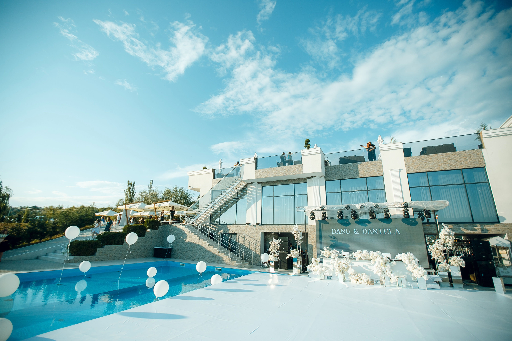
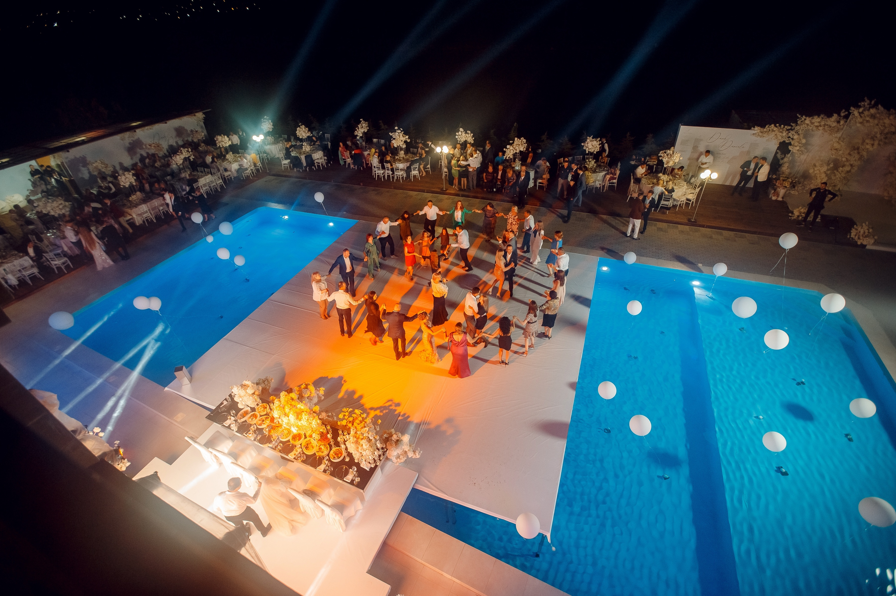
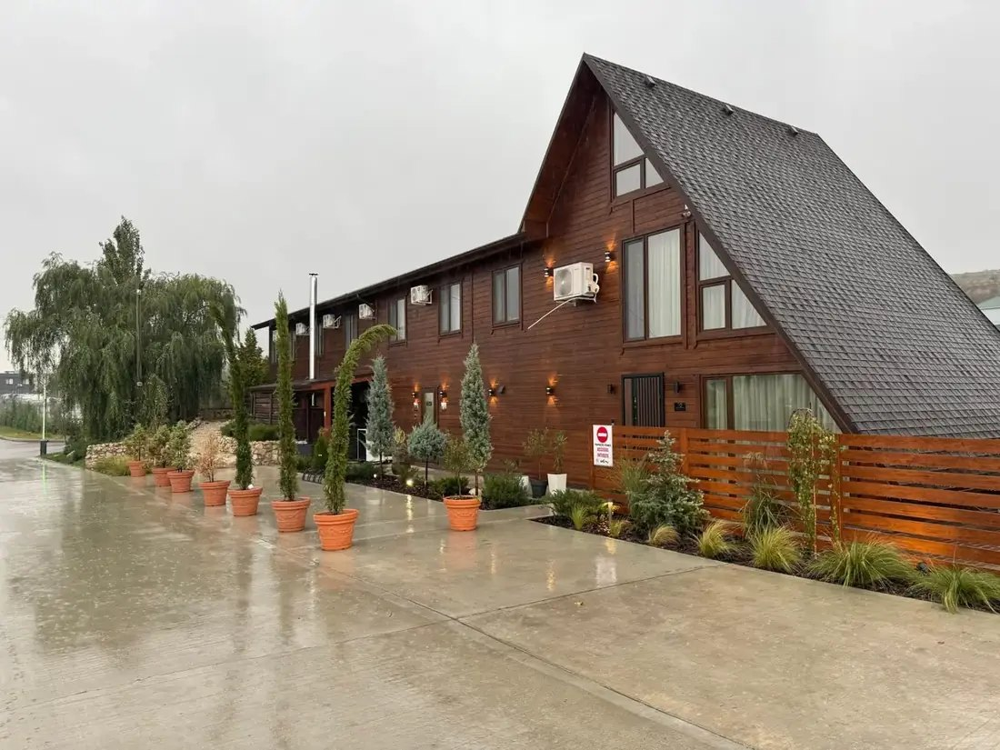

СВАДЬБЫ. СОБЫТИЯ. ЖИЗНЬ У ОЗЕРА.
TURNULALB
Ваш день. Ваши люди.
Место встречи — у озера.
У вашего дня
будет красивый
адрес.
Свадьба на берегу. Ужин на террасе. Танцы, которые никто не хочет заканчивать.
В Turnul Alb есть три разных зала, открытые пространства у воды и номера для гостей. Приезжайте, пройдитесь по территории и выберите своё место.
Какой будет
ваша история?
Три зала. От 36 до 180 гостей.
Посмотрите, какой подходит вам.
Respiro.
Под открытым небом.
Современное пространство, руфтоп и бассейн. Для красивых свадеб, семейных встреч и вечеров, которым не хочется говорить «до свидания».
Повод — ваш.
Место — наше.
Расскажите о вашем событии ↗
ПОСЛЕ ЗАКАТА ВСЁ ТОЛЬКО НАЧИНАЕТСЯ
Этот вечер.
Только ваш.

НЕ ТОРОПИТЕСЬ ПРОЩАТЬСЯ ↗ПРОЖИВАНИЕ / TURNUL ALB
А утром —
никуда не спешить.
После праздника — тишина у озера. Останьтесь в деревянном коттедже или гостевом доме и начните утро без спешки.
Сначала —
знакомство.
Выберите дату и расскажите о планах.
Мы обсудим детали и пригласим вас на просмотр.
ЕЩЁ ПАРА ДЕТАЛЕЙ
Как выбрать подходящий зал?＋
Для 36–72 гостей подойдёт Respiro, для семейного праздника до 100 гостей — Family, для большого события до 180 гостей — Colliseum. Расскажите о формате события менеджеру — он поможет уточнить выбор.
Можно ли приехать на просмотр?＋
Да. Свяжитесь с нами по телефону +373 79 44 99 11 или через WhatsApp и согласуйте удобное время знакомства с комплексом.
Как узнать, свободна ли дата?＋
Выберите желаемую дату в форме и отправьте сообщение менеджеру. Доступность, стоимость и условия бронирования подтверждаются командой Turnul Alb.